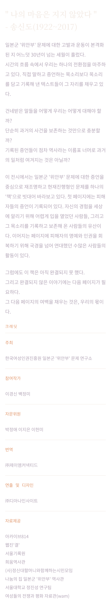
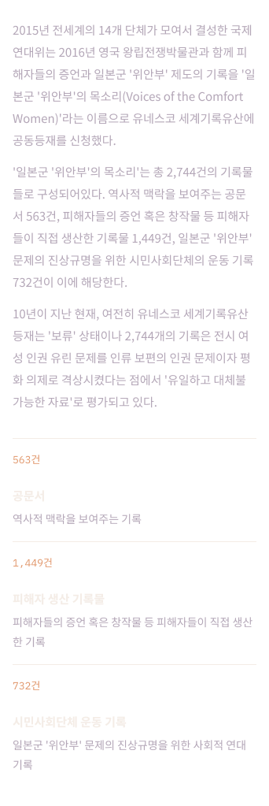
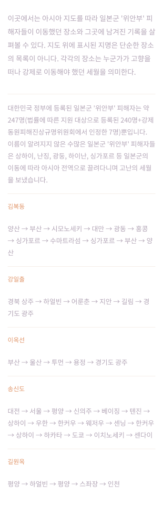
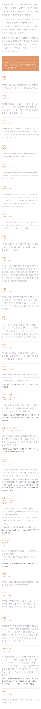
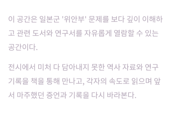

한국여성인권진흥원 일본군 '위안부' 문제 연구소 주최 특별전
증언— 다음 페이지
2,745번째 기록
건네받은 말들을 우리는 어떻게 대해야 할까? 2,744개의 기록 다음 페이지가 될, 2,745번째 기록을 쓰기 위한 여정이 시작된다.
서울 아라아트센터2026.10.23(금) ~ 11.11(수)
대구 아트스페이스 루모스2026.11.15(일) ~ 12.04(금)
관람 전 안내
본 전시 공간에는 전쟁범죄 피해자의 발언이 일부 포함되어 있습니다. 임신 중이신 분, 고령이신 분, 건강이 좋지 않으신 분, 자극에 민감하신 분께서는 관람에 유의해 주시기 바랍니다.
" 나의 마음은 지지 않았다 "
— 송신도(1922~2017)
이 전시에서는 일본군 '위안부' 문제에 대한 증언을 중심으로 재조명하고 현재진행형인 문제를 하나의 '책'으로 빗대어 바라보고 있다. 그럼에도 이 책은 아직 완결되지 못 했다. 그리고 완결되지 않은 이야기에는 다음 페이지가 필요하다. 그 다음 페이지의 여백을 채우는 것은, 우리의 몫이다.
전시 구성
01 안내데스크입구의 서문과 크레딧, 관람 안내.

02 서문 · 연표의 길1975년부터 2026년까지, 증언자와 연구자들이 펼친 운동사의 흐름.

03 1부 · 현재사: 2,744개의 기록유네스코 세계기록유산 공동등재를 신청한 기록물 2,744건.

04 2부 · 증언의 목소리김복동, 강일출, 이옥선, 송신도, 길원옥. 다섯 증언자를 마주한다.
05 기억의 경로아시아 지도를 따라 피해자들이 이동했던 장소를 살펴본다.

06 삶이 보여준 증언증언자와 후대 작가들이 남긴 작품과 기록물 아카이브.

07 전환 통로세계 각국 증언자들의 목소리가 서로 맞닿는 공간.

08 3부 · 숫자가 남긴 말숫자라는 매개체로 다시 바라보는 역사, 관객이 남기는 기록.

09 서고의 숲관련 도서와 연구서를 자유롭게 열람할 수 있는 공간.

한국여성인권진흥원 일본군 '위안부' 문제 연구소
전시장을 그대로 온라인으로
2,745번째 기록
9개의 전시 공간을 360도로 둘러볼 수 있는 3D 가상 전시관입니다. 아래에서 전시실을 고르시거나, 입장 단추로 전체 동선을 따라가 보세요.